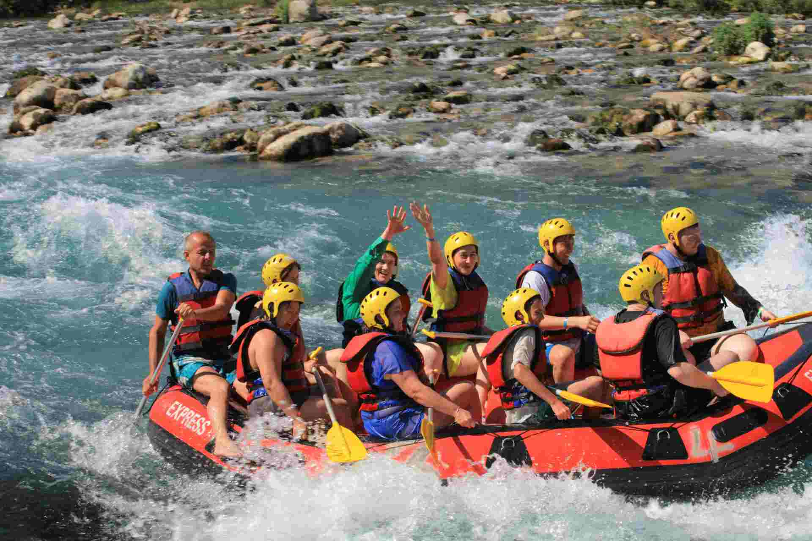

Early History White water rafting has its roots in ancient practices, with indigenous peoples using simple rafts for transportation and fishing. This laid the groundwork for later rafting practices. In the 19th century, explorers like John Wesley Powell emphasized river navigation, bringing attention to the challenges and excitement of navigating rapids. This era laid the groundwork for what would eventually evolve into recreational rafting.
